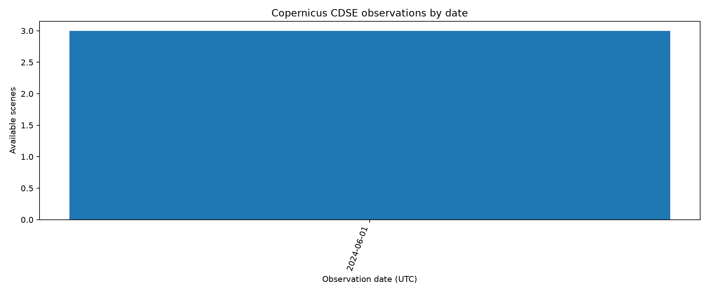

Interaktywna mapa zmian
Porównanie mediany sygnału radarowego przed i po badanym okresie oraz warstwa różnicowa.
RAPORT HTMLAnaliza Copernicus
Podsumowanie wykonania, dostępności obserwacji i wygenerowanych wyników.
WYKRESOś czasu obserwacji
Graficzne zestawienie obserwacji zwróconych przez katalog CDSE.
OPEN DATANajnowsze wyniki JSON
Dane maszynowe do dalszej analizy, integracji i kontroli pochodzenia.
GLOBAL MONITORPodsumowanie katalogu
Dostępność scen Sentinel dla skonfigurowanych regionów monitorowania.
CSVObserwacje katalogowe
Tabela obserwacji gotowa do pobrania i analizy w arkuszu lub Pythonie.
Podgląd osi obserwacji

Ograniczenie naukowe: warstwa radarowa pokazuje zmianę odbicia, a nie automatycznie potwierdzony zasięg powodzi. Wymaga progowania, maski stałych wód i walidacji referencyjnej.